ピノキオピー

Hanauta is PinocchioP's very first song, uploaded in 2009 and remastered in 2016, which is the version of the song's music video that I based the design of this page on since it feels more iconic to me. This version of the music video features silhouettes of PinocchioP's mascot characters Doushite-chan and Aimaina, the former of which he currently uses as his logo. The song is very simple, being about a person who has a crush who they bond with over a song they were whistling, reflecting the title which means whistle.